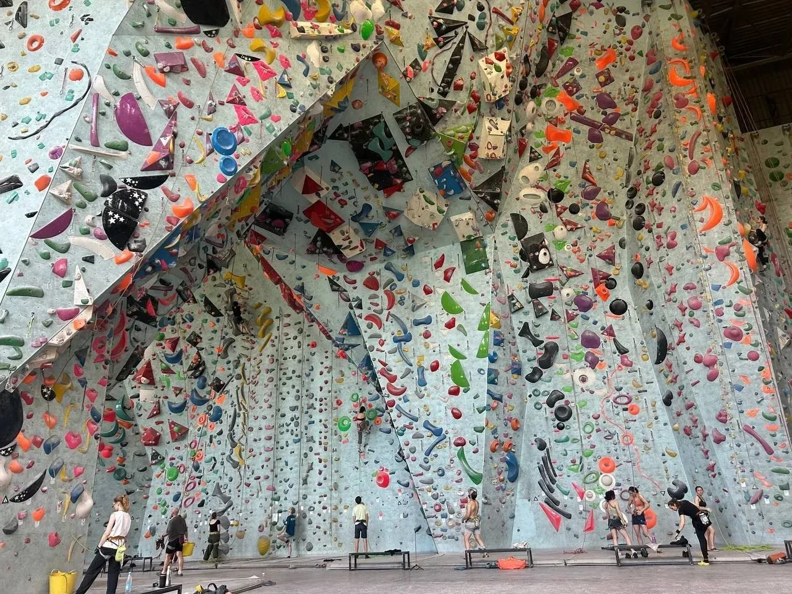
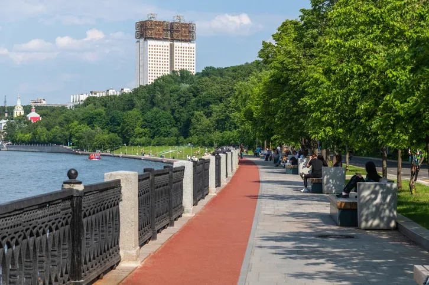
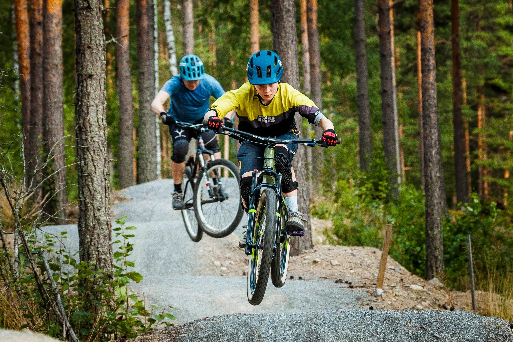

Открытая тренировка для новичков в субботу. Приходите в 11:00 — разминка, техника и свободное лазание.

Открытая тренировка для новичков в субботу. Приходите в 11:00 — разминка, техника и свободное лазание.

Утренний круг по набережной — 5 км, лёгкий темп. Кто со мной в четверг?

Субботний выезд на FREAK Spot: разминка, несколько заездов по pump-track и чай после. Берите шлем и перчатки.
